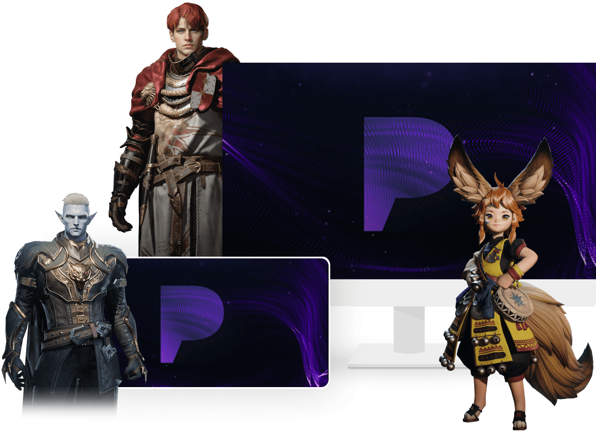
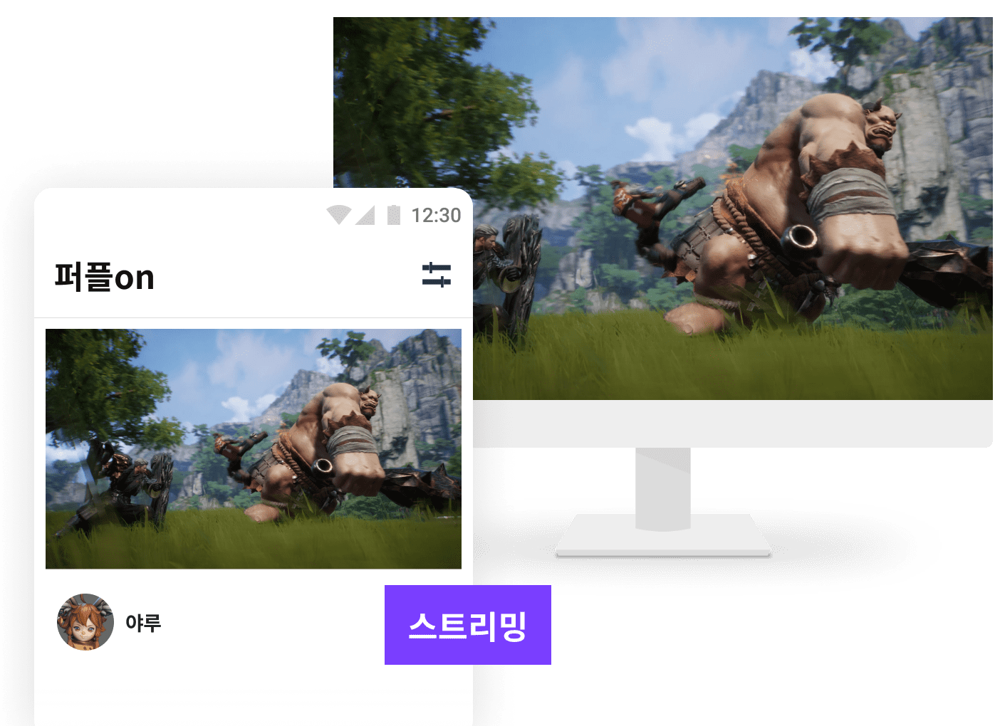
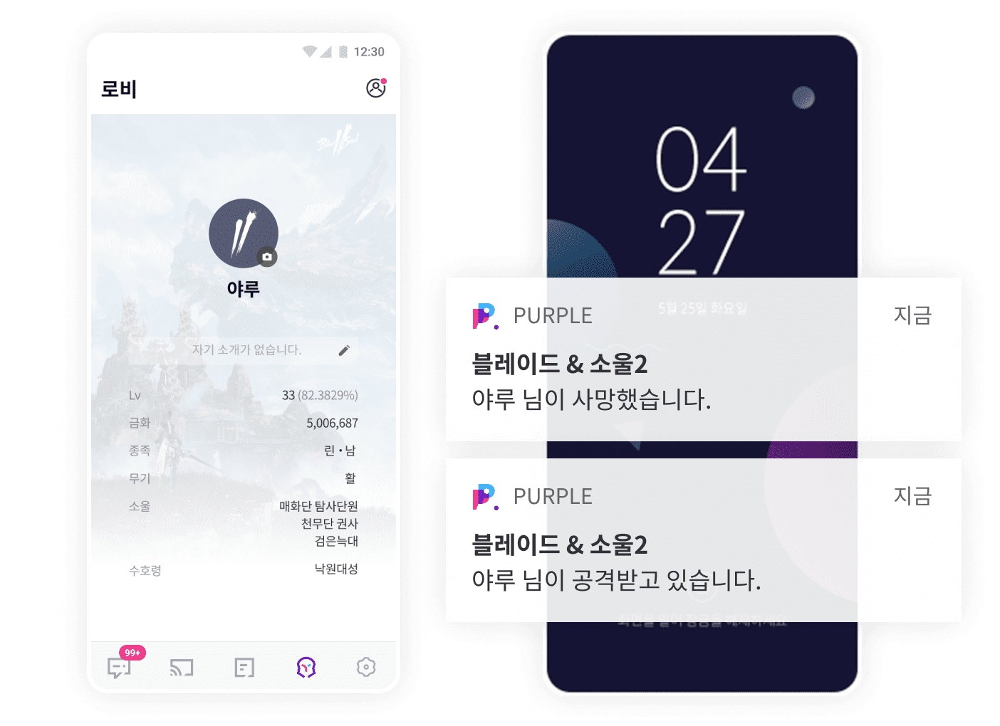
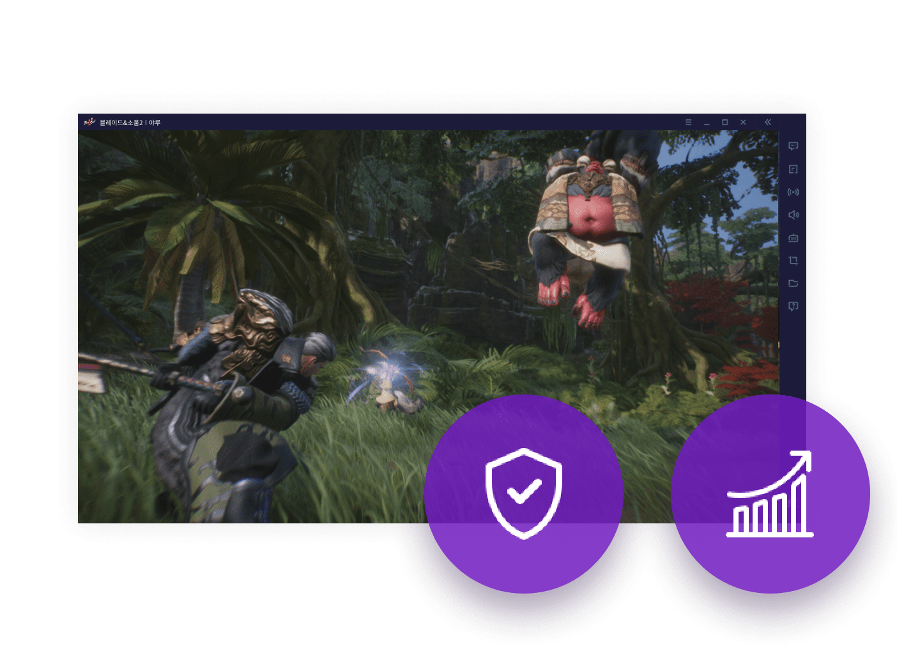

세상 모든 플레이를. 색다르게
logo다양한 게임의 쾌적한 실행과 편리한 커뮤니티 서비스를 통해 차원이 다른 플레이를 경험해 보세요!
다양한 게임의 쾌적한 실행과 편리한 커뮤니티 서비스를 통해 차원이 다른 플레이를 경험해 보세요!
여러분들이 좋아하실 만한 게임들을 퍼플에서 만나볼 수 있어요.
크로스 플레이
넓은 화면과 편리한 조작이 가능한 PC 환경에서도 모바일 게임을 즐길 수 있습니다,

스트리밍
PC에서 실행 중인 게임을 퍼플 모바일에서 끊김없이 플레이할 수 있습니다.

게임 정보 확인
퍼플 모바일에서 캐릭터의 실시간 상태를 확인하고 플레이 상황을 알림으로 받을 수 있습니다.
* 지원되는 캐릭터 정보/알림은 게임에 따라 상이할 수 있습니다.

커뮤니케이션
게임에 접속하지 않은 친구와도 텍스트/보이스 등 다양한 방법으로 편리한 소통을 할 수 있습니다.
화면 공유
별도 프로그램 설치 없이도 퍼플live 기능을 통해 실행 중인 게임 화면을 손쉽게 공유할 수 있습니다.

보안 및 성능
자체 서버를 통해 최적화된 플레이 환경을 경험해보세요. 또한 화면 잠금 기능으로 언제나 안전한 플레이가 가능합니다.
